KV cache, memory hierarchy, autoregression—and how to predict the limiter before profiling.
The stove is ready. The ingredients are not.
A GPU can have abundant arithmetic and still wait for bytes. The first task is to name which bytes, from where, and how often.
One request we can follow token by token
Recorded natural request · Qwen2.5-1.5B
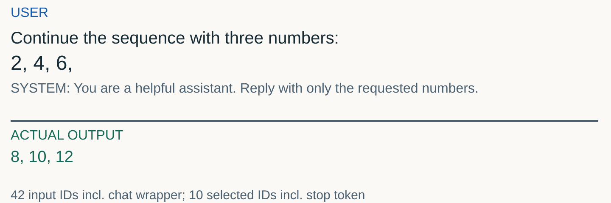
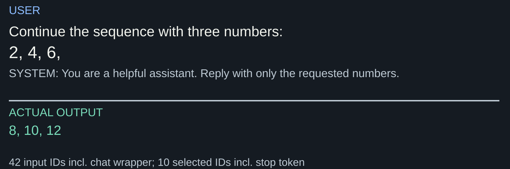
Recorded natural request · Qwen2.5-1.5B. RTX 5070 Ti, FP16, SDPA, greedy, at most 24 new tokens. One warmed instrumented replay. Timing is local, not HTTP latency or a performance baseline. Recorded evidence / method.
“Slow GPU” names no mechanism
Five competing hypotheses
Limiter
Constrained quantity
Discriminating evidence
compute
operations/s
kernel near compute roof
bandwidth
bytes/s
kernel near memory roof
capacity
resident bytes
allocation failure / eviction
launch / shape
useful parallel work
gaps, tiny kernels, low occupancy
queueing
admitted demand
device fast; request waits outside
A percentage is not a diagnosis
What does “GPU 99%” mean?
Common inference
“Utilization is high, therefore compute is saturated.”
A busy interval may contain memory stalls, tiny kernels, late work, or alternating phases. Diagnose with operations, bytes, shapes, timelines, and counters.
Operations · bytes moved · live bytes · elapsed time
Operations and traffic predict rate ceilings; live bytes predict fit; elapsed time tells whether the chosen interval includes queueing, transfers, or asynchronous work.
By the end, you can predict and falsify
Observable outcomes
01
Trace one decoder step and separate the serial token axis from parallel work inside it.
02
Derive weight traffic, arithmetic intensity, ridge point, and KV bytes per token.
03
Predict how prompt, output, batch, GQA, and dtype move the active constraint.
04
Choose wall clock, PyTorch profiler, Nsight Systems, or Nsight Compute for the question.
“
A bottleneck is a relationship between a workload, an implementation, and a machine—not a permanent property of a model.
Lecture thesis
01
Trace one token
The exact prompt, every decoder operation, and the first two output IDs.
The prediction starts at the assistant prefix
Recorded chat boundary · 42 input IDs
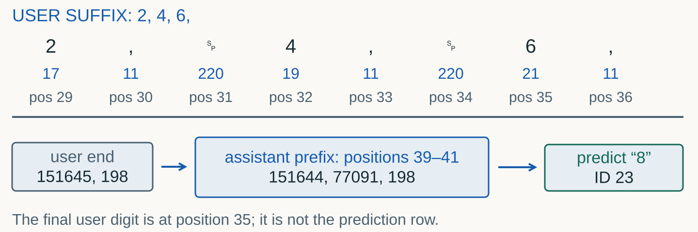
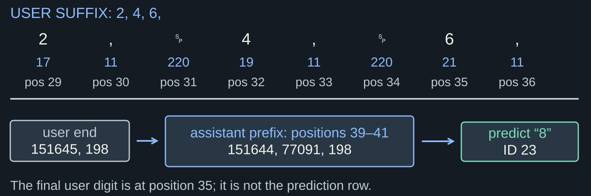
Recorded chat boundary · 42 input IDs. Position indices start at zero. The newline at position 41 is the last input. Its contextual representation, after all 28 blocks, predicts the first answer token. Arithmetic, capture and pinned implementation.
Captured embedding slice · calculated FP16 payload. E[198] selects a row, not the scalar value 198. The same ID has the same initial embedding at both newline positions. Context and RoPE enter later. Arithmetic, capture and pinned implementation.
Two residual additions in one decoder block
Qwen2 block · step with →
X
RMSNorm 1
Attention
+ first add
RMSNorm 2
SwiGLU MLP
+ second add
Input X
Each position carries 1536 values. We preserve X for the first identity bypass.
Worked toy arithmetic + pinned 1.5B dimensions. Toy γ = [1,1,1,1] and ε = 10⁻⁶. Qwen accumulates the variance in FP32, then casts back. RMSNorm does not subtract the mean or mix token positions. Arithmetic, capture and pinned implementation.
Three learned projections make Q, K and V
Worked toy arithmetic + pinned 1.5B dimensions
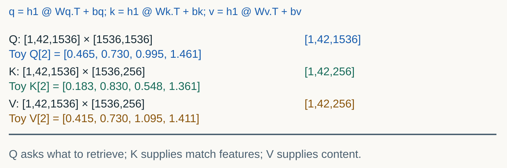
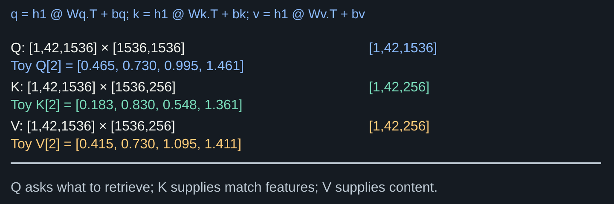
Worked toy arithmetic + pinned 1.5B dimensions. PyTorch stores W as [out, in], so the code uses W.T. The toy JSON stores the transposed [in, out] matrices. Example: toy q₀ = h₀ × 1 + 0.1 = 0.465148. Arithmetic, capture and pinned implementation.
Twelve query heads share two KV heads
Pinned Qwen2.5-1.5B configuration · GQA
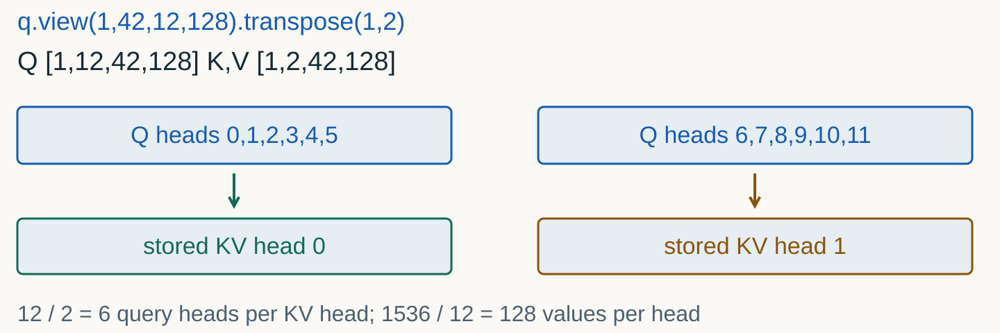
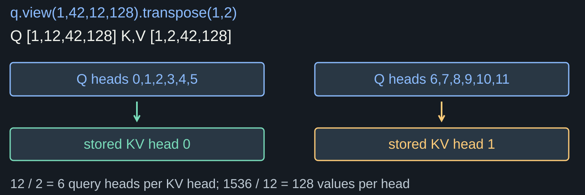
Pinned Qwen2.5-1.5B configuration · GQA. reshape splits features into heads. transpose changes axis order. Grouped-query attention shares K/V across six Q heads; it does not share the Q projections. Arithmetic, capture and pinned implementation.
RoPE rotates Q and K using the position
Worked toy arithmetic + pinned 1.5B dimensions
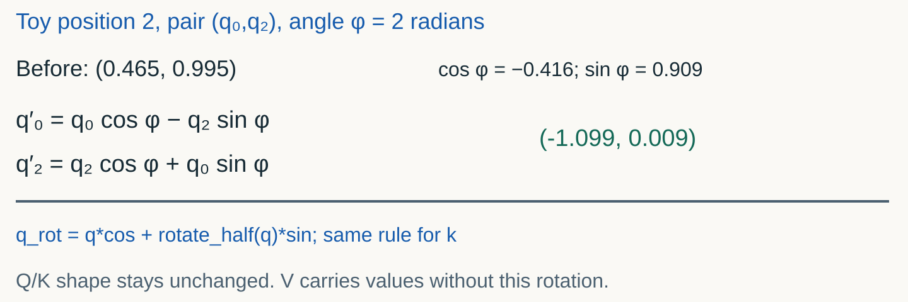
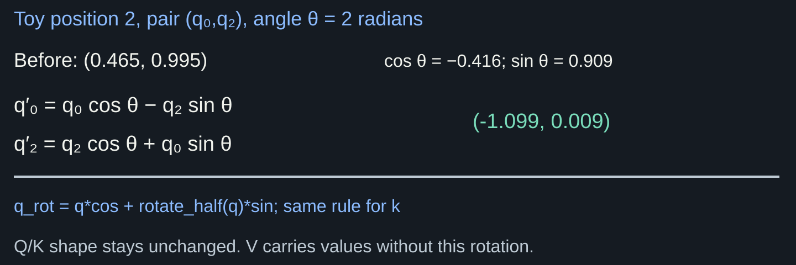
Worked toy arithmetic + pinned 1.5B dimensions. For toy head width 4, pairs are (0,2) and (1,3). For width 128, pair i uses (i,i+64). θ depends on position and frequency. Values below are toy arithmetic, not captured Qwen values. Arithmetic, capture and pinned implementation.
Causal scores compare only available positions
Worked toy arithmetic + pinned 1.5B dimensions
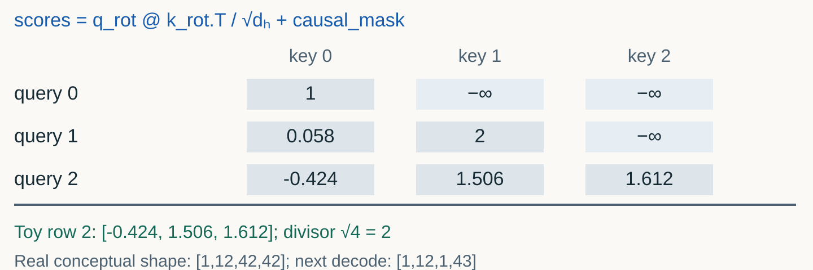
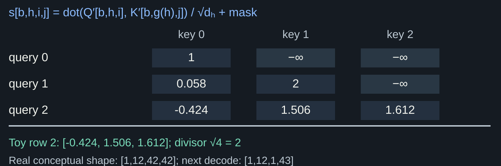
Worked toy arithmetic + pinned 1.5B dimensions. The mask adds −∞ to future positions, so their probability becomes zero. This is the mathematical matrix; fused SDPA need not store the complete score matrix in device memory. Arithmetic, capture and pinned implementation.
Softmax turns scores into a weighted value sum
Worked toy arithmetic + pinned 1.5B dimensions
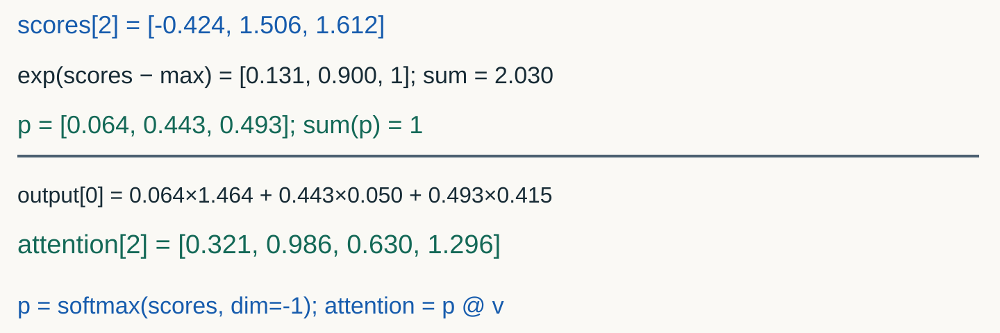
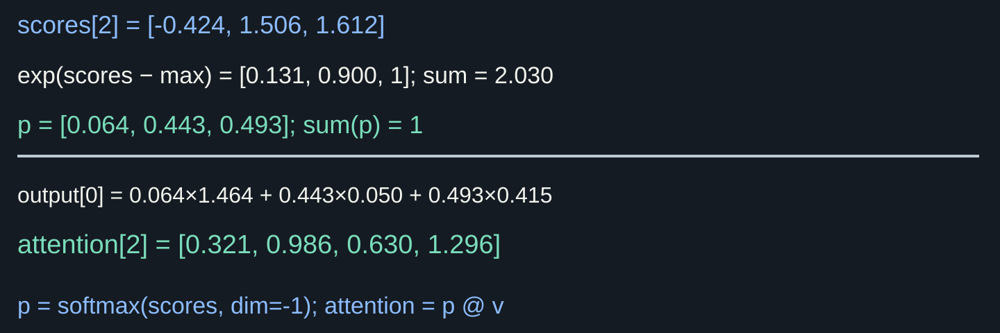
Worked toy arithmetic + pinned 1.5B dimensions. This is the step that mixes positions. Softmax normalizes across allowed key positions within one query/head. The notebook exposes every value vector and the full multiplication. Arithmetic, capture and pinned implementation.
The attention branch returns to the residual stream
Worked toy arithmetic + pinned 1.5B dimensions
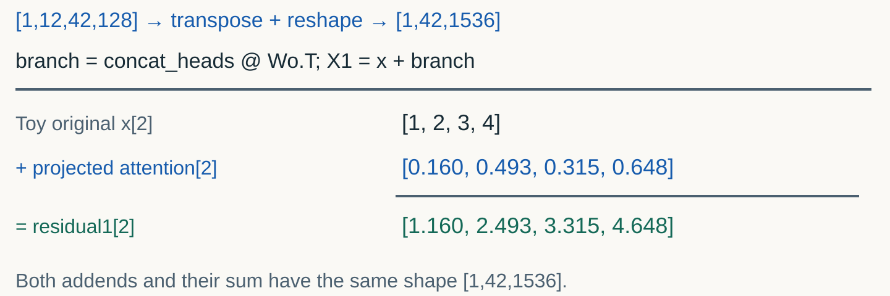
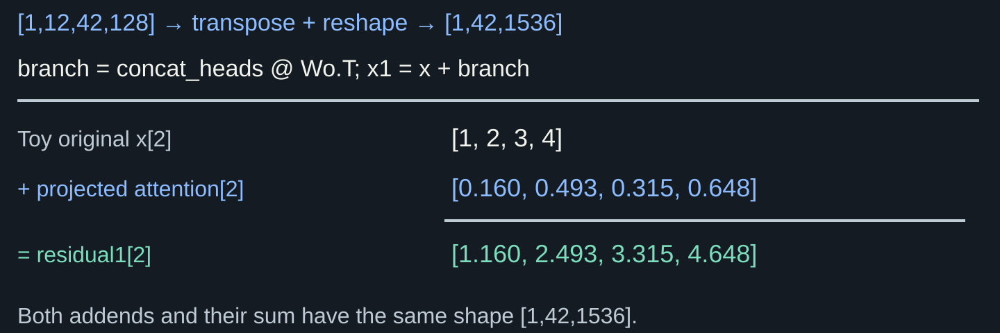
Worked toy arithmetic + pinned 1.5B dimensions. Attention mixes token positions. The output projection mixes the concatenated head features at each position. The bypass retains the original X, before RMSNorm. Arithmetic, capture and pinned implementation.
The MLP expands each position along two branches
Worked toy arithmetic + pinned 1.5B dimensions
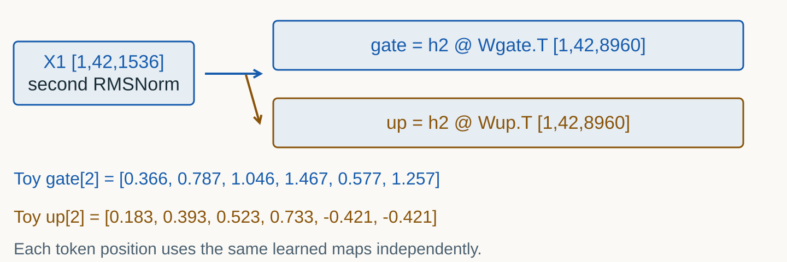
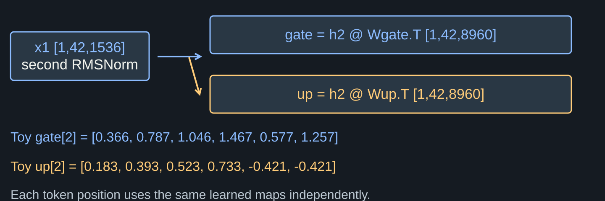
Worked toy arithmetic + pinned 1.5B dimensions. h2 = RMSNorm(x1). Qwen2.5-1.5B uses intermediate size 8960. The tiny fixture uses 6 solely so that every intermediate value fits on screen. Arithmetic, capture and pinned implementation.
SwiGLU gates features before the second addition
Worked toy arithmetic + pinned 1.5B dimensions
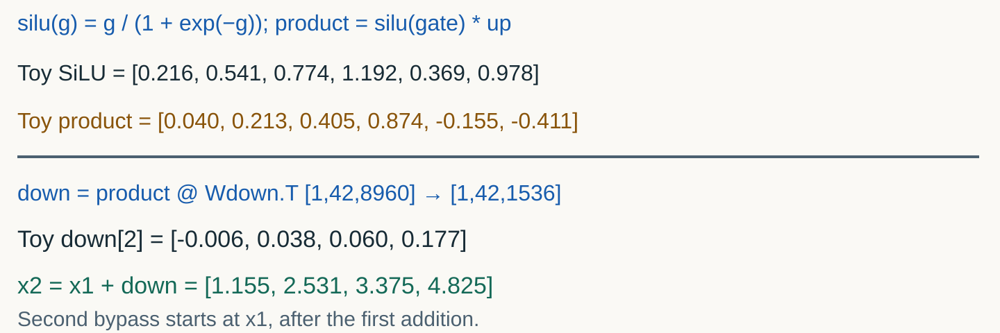
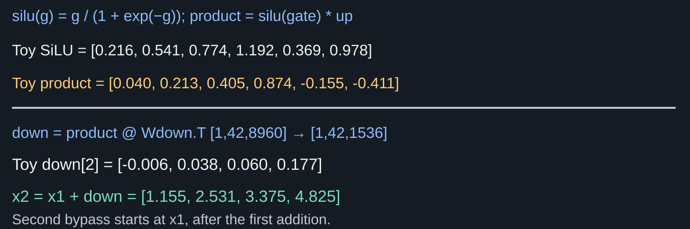
Worked toy arithmetic + pinned 1.5B dimensions. SiLU is smooth and can be negative. The product is elementwise, not matrix multiplication. gate/up/down weights differ, and the down projection has no bias here. Arithmetic, capture and pinned implementation.
Twenty-eight blocks update the same-shaped stream
Pinned architecture + captured final norm slice
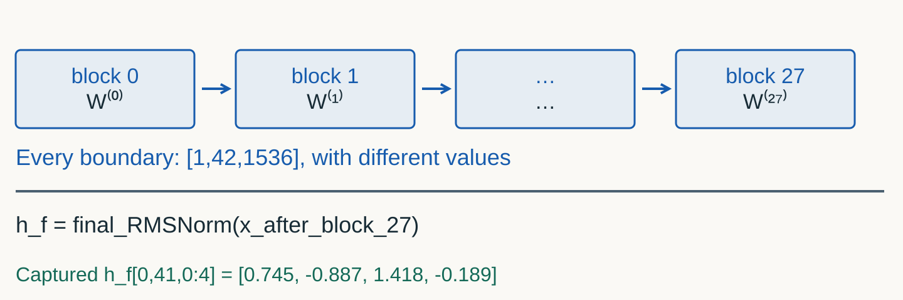
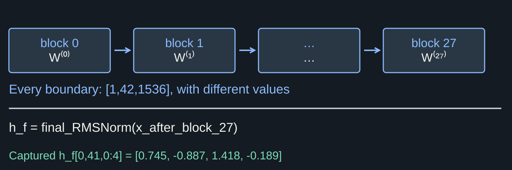
Pinned architecture + captured final norm slice. A repeated block structure does not mean reused weights. Layers depend on earlier layer outputs. Independent heads, token rows and matrix tiles still expose parallel work inside a step. Arithmetic, capture and pinned implementation.
Captured last-position logits · exact greedy choice. logits = h_final[:, -1:, :] @ W_vocab.T. Greedy needs only argmax(logits). Softmax makes a distribution for sampling; the displayed probabilities need not sum to one. Arithmetic, capture and pinned implementation.
The selected 8 becomes one new query
Recorded IDs · dependent forward calls
token ID
28 blocks
logits
greedy
consume ID 23“8”, position42
append K/V: 42 → 43Q:[1,12,1,128]
last-position logits151936 scores
choose ID 11comma, no KV yet
consume ID 11next forward only
What persists?
42 old K/V rowsreused
1 new K/V rowappended
comma ID11next input
One decode query reads a longer history
Recorded cache lengths · calculated operation shapes
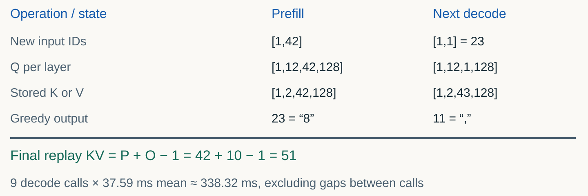
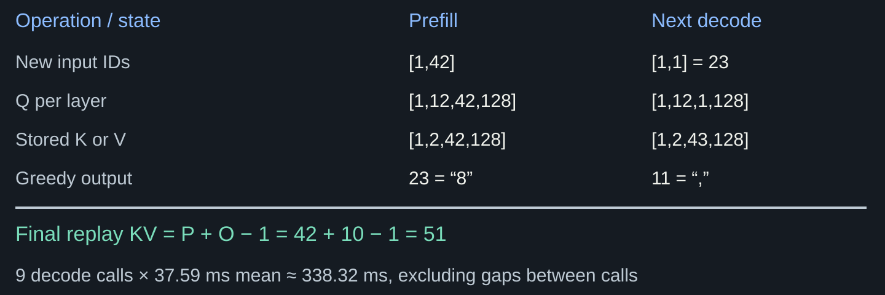
Recorded cache lengths · calculated operation shapes. 5 digit tokens + 2 commas + 2 spaces + 1 EOS = 10. The natural replay stops on EOS; the separate synthetic v2 matrix deliberately ignores it to fix output length. Arithmetic, capture and pinned implementation.
The same graph exposes different resource questions
Operation map · learner checkpoint
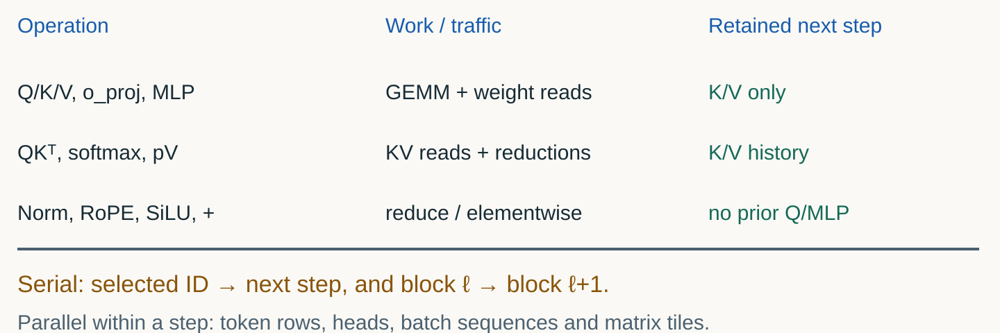
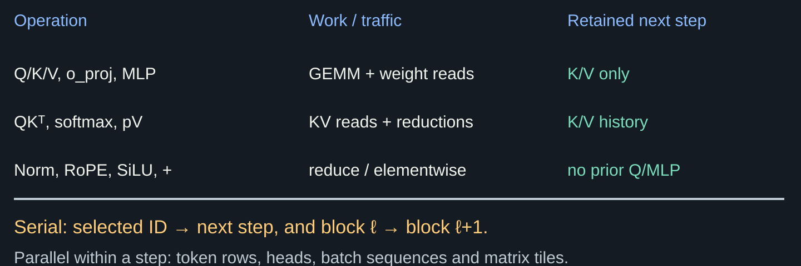
Operation map · learner checkpoint. Checkpoint: where do positions mix, which identity edge carries x1, and why is Q history unnecessary? These dependencies predict what to measure; they do not establish the limiting resource without evidence. Arithmetic, capture and pinned implementation.
02
Separate the phases
Prefill and decode run the same weights through different shapes.
The first call consumes the complete chat
Recorded forward + argmax · 1.5B
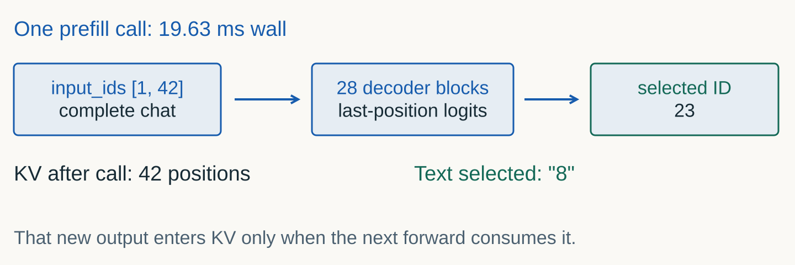
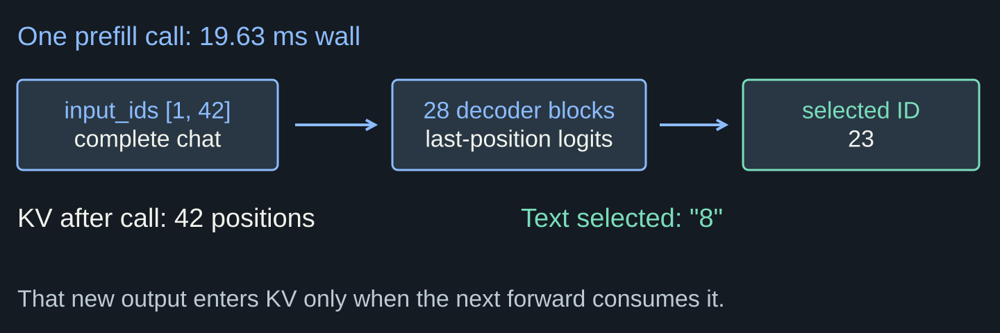
Recorded forward + argmax · 1.5B. Timer covers forward + greedy selection after input transfer. CPU tokenization, text rendering and resource checks sit outside it. This is one instrumented observation. Recorded evidence / method.
The next call receives the token just selected
Recorded dependent calls · 1.5B
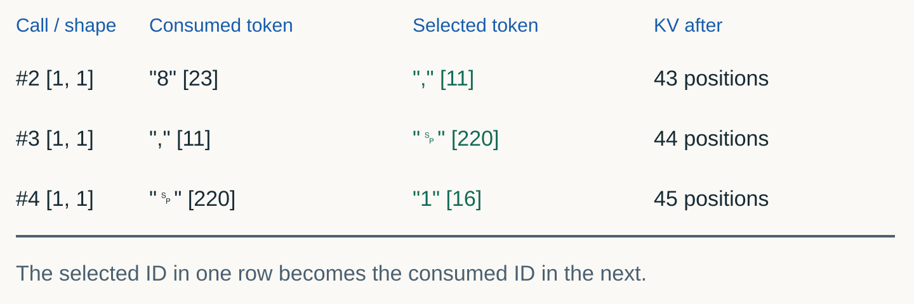
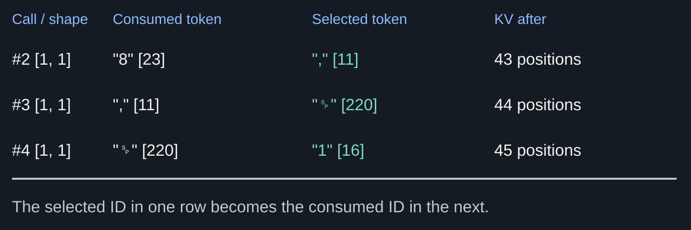
Recorded dependent calls · 1.5B. Rows are actual sequential calls. The input width becomes 1 while the KV history grows. Recorded wall time includes synchronization instrumentation, not network delivery. Recorded evidence / method.
Mtoken rowsB × prompt/chunk length for prefill; B for decode
d / doutvalues / rowInput and output widths of the projection
Our chat: B=1 and P=42 give prefill M=42; the next decode call has M=1.
Retained context length is not M in decode. The query is new; K/V history can be long.
One weight tile, several token rows
Illustrative reuse mechanism
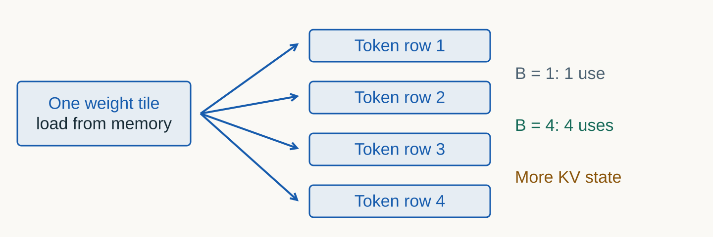
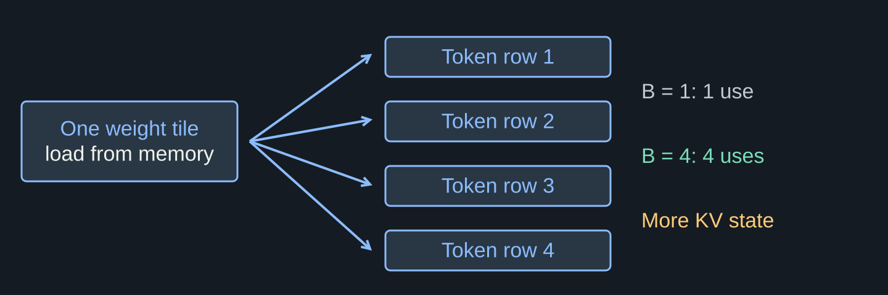
Illustrative reuse mechanism. Idealized reuse is not guaranteed HBM traffic. Caches, tiling, shapes and other tensors determine realized intensity. Source / method.
The same request changes the projection shape
Calculated from the recorded input · 1.5B
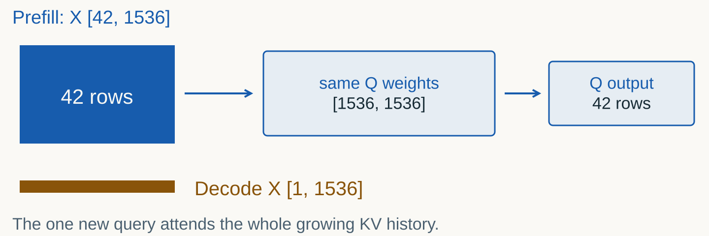
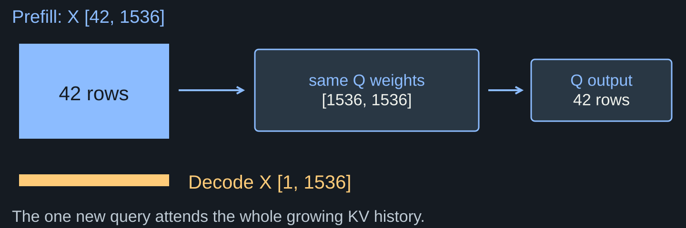
Calculated from the recorded input · 1.5B. A dense Q projection shown as X @ W, before head reshaping. Query head count and width come from the pinned config. KV history length is not the new-query row count. Recorded evidence / method.
Nw × bwbytesDense weights × bytes per stored weight
BWbytes / secondBandwidth at the declared memory boundary
3×10⁹ weights × 2 B ÷ 600×10⁹ B/s = 0.010 s = 10 ms per weight sweep.
Hypothetical 600 GB/s, full streaming assumption. Cache reuse changes traffic; other work can add time.
The shortcut predicts scale—not a trace
What (2P) omits
Bad conclusion
“The model is 3B, therefore every token costs exactly 6 GFLOP.”
Attention depends on context; embeddings may be tied; MoE activates subsets; kernels add elementwise work; implementations fuse and count operations differently.
Change the phase; watch the matrix dimension collapse
Interactive shape explorer
Phase
new queries
attention scores
projection family
active phase
interpretation
shape changes reuse
A long kernel can interrupt a token stream
Constructed single-device timeline
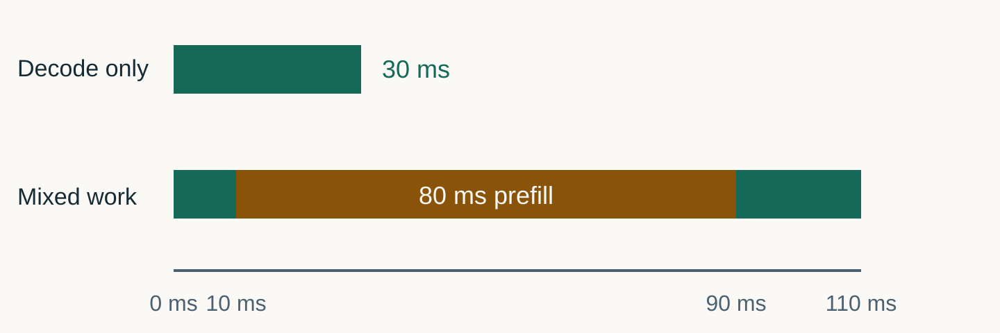
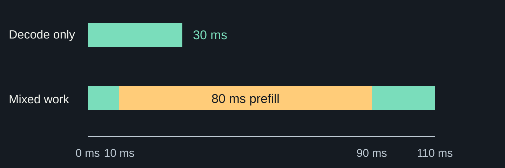
Constructed single-device timeline. Illustrative serial schedule, not a measured trace. Chunking/scheduling choices return in Topic 05; faster prefill alone is not a fairness policy.
4,096 prompt tokens versus 31 generated steps
Measured v2 · 1.5B · B1 · FP16
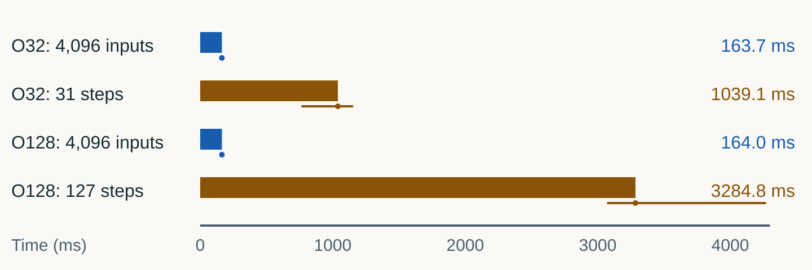
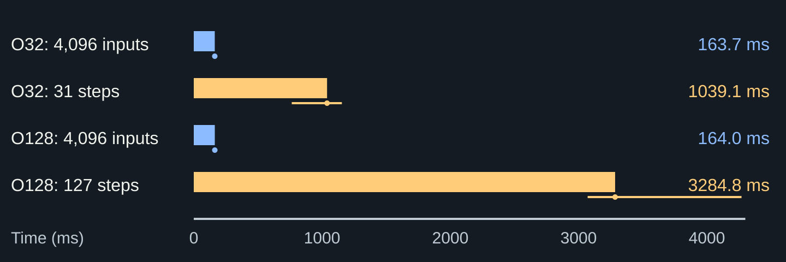
Measured v2 · 1.5B · B1 · FP16. One common time scale, separate phase medians and min–max. Repeated synthetic IDs, not a document. First output belongs to prefill. No HTTP or queue time. Recorded evidence / method.
03
Follow the bytes
Capacity tells whether data fits. Bandwidth and reuse tell how fast it feeds compute.
Bytes cross different physical boundaries
Logical memory path
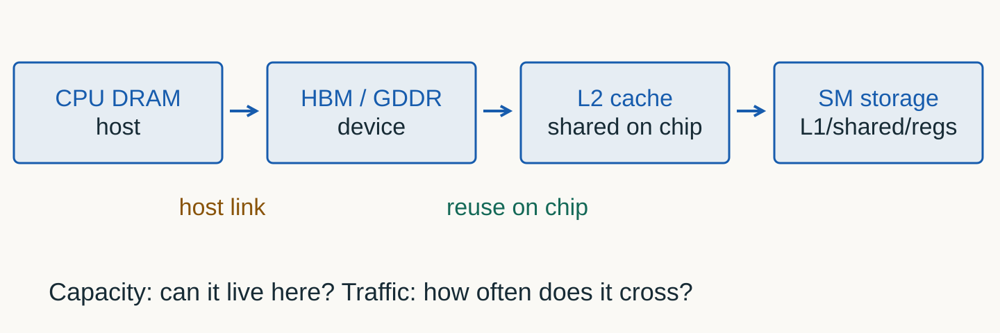
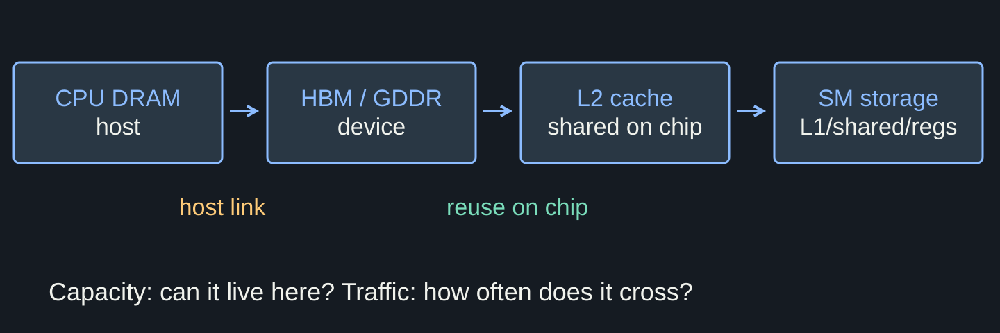
Logical memory path. HBM versus GDDR depends on the GPU. Shared memory/L1 organization is architecture-dependent; this map is not a strict mandatory serial route. Source / method.
Three memory failures need three tests
Diagnostic map
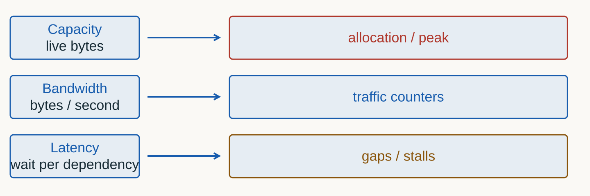
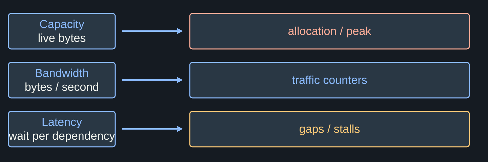
Diagnostic map. An OOM does not prove bandwidth saturation; high free memory does not prove fast access. Choose evidence for the mechanism. Source / method.
Tensor role predicts desired placement
But software does not control every hit
Long-lived
weights: device memory, reused by kernels
KV cache: device memory, grows per request
allocator pools: reserved for reuse
Short-lived / tiled
activations and workspace
L2-resident reused lines when lucky
shared-memory tiles and registers
Reuse is the bridge from bytes to operations
The performance lever
DATA REUSE
Perform more useful operations before the same data must be fetched again from a slower memory level.
Batching reuses weights across token rows; tiling reuses blocks on chip; fusion keeps intermediate values closer to compute.
Useful bytes and transferred bytes can differ
Illustrative access pattern
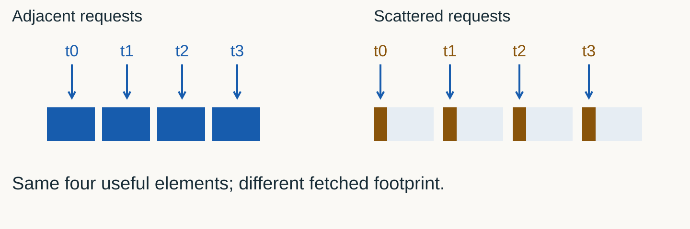
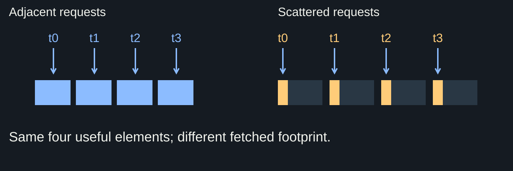
Illustrative access pattern. Segments are schematic, not a claim of a universal CUDA transaction size. Alignment, element width and cache state matter. Source / method.
Fusion removes intermediate memory trips
Worked traffic accounting
Worked traffic accounting. For 1 Mi elements at 2 bytes each: 12 MiB versus 4 MiB idealized payload. This is not a guaranteed threefold wall-time speedup. Source / method.
Keep attention intermediates close to compute
Algorithmic IO sketch
Algorithmic IO sketch. Exact attention with floating-point rounding differences; logical persistent KV and the output-token dependency still remain. Source / method.
Less attention IO does not erase generation physics
Scope the optimization
Overclaim
“FlashAttention solves long-context inference.”
Autoregressive steps remain serial; KV state still grows; decode still reads history; weights, MLPs, capacity, and scheduling remain.
Illustrative roofs, not RTX specifications. A ceiling is not a promise; launch gaps and capacity are absent.
The ridge is where the active ceiling changes
Units → example → limits
$$I^*=\frac{P_{\mathrm{compute}}}{BW}$$
I*FLOP / byteIntensity where the two roofs intersect
Pcompute / BWmatched rate unitsUse the same precision and memory boundary
60×10¹² FLOP/s ÷ 600×10⁹ B/s = 100 FLOP/B; I=20 is left of this ridge.
Changing precision may move both the workload point and the compute roof. Do not compare unlike modes.
Move the workload point across the ridge
Interactive upper bound
Machine
60 TFLOP/s · 600 GB/s
Ridge
Change reuse, batch, precision, or tiling only if the implementation truly changes operations or bytes.
Ceiling
Regime
Intensity
A roof bounds rate; it does not promise it
Illustrative machine model
Illustrative machine model. Use matching precision and one declared memory boundary. Values describe a hypothetical machine, not the RTX 5070 Ti specification. Source / method.
An ideal weight-reuse model, not linear speedup. KV traffic, capacity and latency also increase.
Four sequences advance on each batch step
Measured v2 · P128 · O32 · 1.5B
Measured v2 · P128 · O32 · 1.5B. Five trials per case. Dots illustrate sequence participation, not measured arrival times. Static identical-length batches do not establish service capacity or waiting time. Recorded evidence / method.
HBM is not the only traffic boundary
Hierarchical roofline
Boundary
Question
Possible evidence
device memory
are HBM/GDDR bytes limiting?
DRAM throughput and intensity
L2
is reuse captured on chip?
L2 hit/traffic counters
shared/L1
are tiles reused efficiently?
bank conflicts / local traffic
registers
does pressure reduce occupancy?
register count and spills
A memory-bound kernel can keep the GPU “busy”
Activity is not issue efficiency
Dashboard myth
“Memory-bound means low GPU utilization.”
Kernels may be continuously active while arithmetic pipelines wait on data. Use achieved bandwidth, compute throughput, stalls, and roof proximity.
Below both roofs: separate kernels from gaps
Constructed 100 ms interval
Constructed 100 ms interval. A low achieved rate can reflect insufficient parallelism, dependencies, launch gaps or the wrong roof—not just bad arithmetic code. Source / method.
Selected output and cached input differ by one token
Recorded cache transitions · 1.5B
Recorded cache transitions · 1.5B. One selected ID becomes input on the next call. The final stop token has no KV entry because generation ends without feeding it back. Logical KV excludes weights and allocator overhead. Recorded evidence / method.
Reuse history; append one position
KV lifecycle · step with →
prompt
layer ℓ
KV cache
next token
prefill positionsS tokens
store K,Vall layers
read historydecode
append K,V + sample+1 position
Per layer
prefillwrite S
decoderead history
appendwrite 1
Derive cache bytes from model structure
Units → example → limits
$$K_{\mathrm{token}}=2L H_{kv}d_hb$$
2LK/V arrays × layersTwo stored vectors in each decoder layer
Hkv × dhvalues / vectorKV heads, not query heads
bbytes / valueActual KV-cache element precision
2 × 36 × 2 × 128 × 2 B = 36,864 B/token = 36 KiB/token for pinned Qwen2.5-3B.
Logical payload only. Does not include weights, block rounding, workspace or allocator pools.
Query heads are not stored KV heads
Transfer example · Qwen2.5-3B
Transfer example · Qwen2.5-3B. Sharing K/V changes stored width. Replacing two KV heads with sixteen is a storage counterfactual, not a quality-equivalent model conversion. Recorded evidence / method.
16 / 2KV-head ratioChange only the stored-head count in this calculation
1.6875 GiBlogical payloadSame 49,152 token positions at two KV heads
Per-token payload rises from 36 to 288 KiB. Eight times the KV heads means eight times these bytes.
Storage counterfactual, not an equally accurate model. It still excludes weights and runtime overhead.
Admission must budget tokens—not requests
Interactive KV capacity
2 × 36 layers × Hkv × 128 × bytes
Logical KV payload against an illustrative 8 GiB budget.
Per token
Live tokens
KV payload
Budget result
What stays resident is not what is read per second
Illustrative KV lifecycle
Illustrative KV lifecycle. A logical history-access count is not measured HBM traffic. The selected token has no cache entry until the next forward pass.
Includes each current query position. Multiply by heads/layers for broader work; not measured HBM bytes.
More logical KV can leave the measured peak unchanged
Measured peak + calculated KV · 1.5B
Measured peak + calculated KV · 1.5B. KV uses 28 KiB per retained position for this 1.5B config. Peak allocated includes other tensors and can occur earlier. Allocated is inside reserved, never an additive extra. Recorded evidence / method.
Identical prefixes can share work—not all state
Illustrative prefix ownership
Illustrative prefix ownership. This is the ownership question; cache-key design and block implementation belong to later engine topics. Similar text is not necessarily identical token state.
Four tickets can be larger than forty
A request-count limit treats a 32-token completion and a 32k-token context as equals. The allocator cannot.
Fit the workload before launching it
Capacity checklist
Input
Evidence source
Do not guess from
layers, Q/KV heads, head dimension
pinned model config
parameter count alone
cache dtype
runtime configuration
weight dtype
live token distribution
workload + scheduler state
request count
usable budget
measured post-load headroom
device total VRAM
06
Profile in layers
User clock first. Timeline second. Kernel counters only when the question demands them.
Choose the instrument from the question
Four layers of evidence
Instrument
Best question
Blind spot
wall clock / request trace
what did the user wait for?
kernel mechanism
CUDA events
how long was this device interval?
not kernel attribution; no HTTP queue
system timeline
where are launches, copies, gaps, overlap?
deep kernel counters
kernel profiler
why is this kernel below a roof?
unprofiled end-to-end context
A CPU launch can finish before device work does
Constructed asynchronous timeline
Constructed asynchronous timeline. Event intervals can include idle time while Python launches later kernels. Do not label them summed CUDA kernel time. Source / method.
Two clocks around the same recorded call
Measured instrumented replay · 1.5B
Measured instrumented replay · 1.5B. One warmed request, with a synchronization at every step. Both clocks can include launch gaps. The replay also records whole instrumented request time, which includes inspection between calls. Recorded evidence / method.
A repeatable profile is staged
Protocol · step with →
01
Pin
model revision, software, GPU, clocks/power context
fixed shapes, token counts, dtype, seeds, API path
comparison
04
Repeat
trial distribution, not one fastest observation
variability
A CPU launch and its actual CUDA kernel
Recorded trace excerpt · 0.5B · P128/O8
Recorded trace excerpt · 0.5B · P128/O8. Synthetic input, profiled execution. Top: start markers, not duration bars. Bottom: first pair on a 50 µs zoom. Correlation links the events but does not prove the cause of the gap. Recorded evidence / method.
A timeline and a kernel counter answer different questions
Evidence-to-instrument map
Evidence-to-instrument map. Do not infer HBM saturation from an operator name or a GPU-utilization percentage. Profile the shape and phase that produced the symptom. Source / method.
Instrumentation changes the thing observed
Control the observer effect
01
Baseline run
uninstrumented latency and throughput distribution
product truth
02
Focused capture
few warm iterations inside an explicit range
mechanism
03
Re-run baseline
verify the proposed change without profiler overhead
recompute logical budget and capture allocation timeline
memory
Optimize the share of wall time, not a table rank
Worked Amdahl example
Worked Amdahl example. Assumes unchanged other work and no overlap. A 3% time reduction is a 100/97−1 = 3.09% throughput speedup for serial repetitions.
A bounded experiment has a stopping rule
Illustrative measurement workflow
Illustrative measurement workflow. Stop on resource growth, errors or missed safety limits. A successful one-request lab does not authorize a broad unattended load sweep.
07
Reconcile evidence
The seminar starts with a prediction and ends with an explained disagreement.
One required protocol across slides, Book and lab
Executable lab protocol v2
Executable lab protocol v2. B1/128/32 is the matched control for B4. Output 512 and B8 are optional extensions. Every core trial is checkpointed; partial is not complete. Source / method.
The same prefill shape has different observed medians
Measured v2 · unresolved variation
Measured v2 · unresolved variation. Same initial token IDs, dtype and prefill API. Five raw trials per group. Future O controls the later loop only. Runtime/order variation remains a hypothesis, not a diagnosed cause. Recorded evidence / method.
A different median needs a discriminating test
Prediction and reveal
01
Prediction
Identical initial IDs and prefill call should not depend on future O
same input
02
Observation
P128 groups: prefill medians 22.3 ms versus 64.6 ms
five trials
03
What the data leave open
The ranges overlap; no established cause for the variation
uncertain
04
Next bounded experiment
Repeat identical prefills in interleaved order; record clocks and host activity
falsifiable
Batch four raises aggregate rate in this run
Measured v2 · 1.5B · RTX 5070 Ti
Measured v2 · 1.5B · RTX 5070 Ti. Dot = median; segment = min–max of five trials. Per-sequence cadence ranges overlap. Preserve variation; do not generalize the median ratio. Raw evidence / method.
Kernel events occupy only part of the profiled span
Measured v2 · focused 0.5B traces
Measured v2 · focused 0.5B traces. Stacked totals summarize durations, not event order. Copies/other categories are excluded. Profiling adds overhead; do not apply these shares to unprofiled service latency. Raw evidence / method.
The payoff
Do not optimize the component with the loudest dashboard. Predict the active constraint, measure the right boundary, and explain what disagreed.
Name the phase, calculate one ceiling, and choose the observation that could falsify it. Next: change the bytes with quantization—without losing sight of quality.